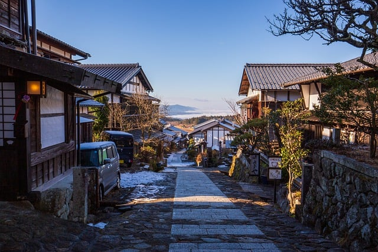

This is a travel guide if you're planning to visit Japan. The best places to visit are included in this site. This website if for anyone that wants to visit Japan and enjoy the best places in a short period of time. It also includes food to try as well. Click from the list below to check out the places you can visit!